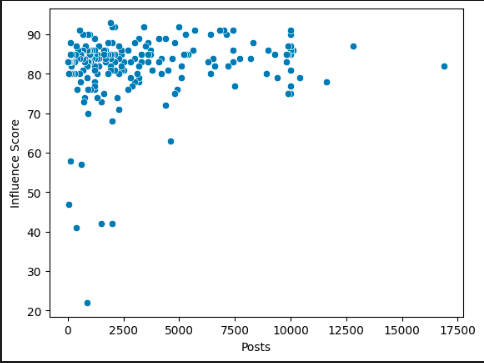
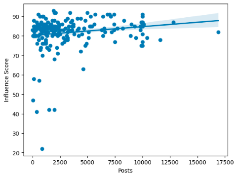
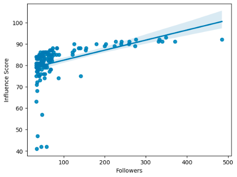
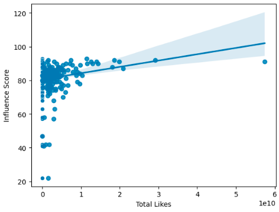

Over the last few decades, social media is one of the main ways we receive news and information. Most of the time, when we go online to browse for entertainment or look for specific information, we come across 'influencers' who deliver
that information.
Everyone has differing opinions about most subjects, however big influencers have something in common: Followers. This must mean that the influencer has some connection with a broad audience.
To me, this begs the question:
What factors lead to a successful social media influencer?
To start, I retrieved data on the top 200 influencers within the year of 2022 I then started comparing two sets of data with different areas that I thought may contribute to a more successful outcome. I found that each
influencer has an influencer score - this score is made by combining all of their stats - likes,followers, etc.
This score will be the basepoint of the comparisons. We will compare the influencer score with other topics,
like the amount of posts they have made. This comparison will be used to see if there is a positive connection between their influencer score and other factors.
To Start off, I compared the influencer score
and total posts to see if there is a content quantity correlation with success.

As it turns out, there is no overwhelming evidence - the dots (influencers) are all over the place with most having more luck than others with the score to posts ratio. That is until you account for all dots and find a trend between them.

Now, by using the Pearson correlation coefficient, we can see a small incline by using the dots. This means that there is a reason to have more posts to drive your score up. Most dots are around the ‘83’ mark of influencer scores meaning
that it is vital to post - it not only does it slowly bring up your score but also keeps your followers engaged. Plus, it brings new ones in as well.
If you dont post, how could you influence others?!
On the topic
of followers, when comparing followers to the influencer score, you can clearly see a much steeper positive incline.

This is showing that your audience (Followers) agree and can relate with your content. This shows that there is a big positive correlation with followers and your score. Your success relies on your audience. The more you can influence,
the better.
So you have an audience but how can you know if people like your content?
(hint: the word is in the sentence above!)
You got it - Likes! Easily one of the best tools on social media to know what your
followers enjoy.
With comparing the total likes of the influencers to, once again, the influencer score, there is a positive trend.

This reinforces the fact that the more likes, the overall better score you can get. This also means that if you have likes, you make good content that lots of people enjoy and agree with even if your numbers are small.
On
the topic of likes, last but not least, let's take a look at the average likes. Similar to the posts data, there is an extremely small positive incline.
Similar to likes, the better your average likes are, the better your influencer score will become.
To wrap it all up...
We looked at the top dogs of the Instagram influencer world and analyzed some big factors that could make them successful. We found out that all of the factors we went over have a positive reaction to your score if done properly. Overall, I believe some aspects resort to success more than others. For starters, posting is essential to begin getting your ideas out. Secondly, getting likes is vital for growth by knowing what people like what you are sharing. Average
likes are also good to keep tabs to monitor your like consistency. Lastly, having a loyal following is key to maintaining and growing your empire of influence.